"Đầu khách mở Đã gửi và thấy các link đã gửi trên cùng Lưới với Bảng hàng"
Vì sao làm
Màn thứ hai chứng Lưới dùng lại được mà không thêm prop kiểu dáng
Đã hứa
- AC-1 — Given dữ liệu mẫu của hàng 1 (60 lần chào của sàn mẫu), When dựng link mẫu, Then có đúng 14 link cùng sàn mẫu, id
- AC-2 — Given Đã gửi ở trạng thái có dữ liệu, When trang sẵn sàng, Then đầu màn là «Đã gửi», vùng tên «Link đã gửi» có
- AC-3 — Given bộ bài sinh từ sổ màn (hàng 1f), When chạy bộ khung và bộ vùng trên Đã gửi ở bốn khổ, Then màn không còn bị
- AC-4 — (cross-layer) Given bản thật (`NODE_ENV=production`), When mở Đã gửi với `?state=` là `loading`, `empty`, `error`,
- AC-5 — Given Đã gửi có dữ liệu, When bấm tên người nhận của một link, Then ngăn chi tiết mở cạnh bảng với địa chỉ
- AC-6 — Given vùng Đã gửi, When đọc mã của nó, Then vùng dựng bằng đúng khuôn Lưới (`DataRegion`) và chỉ truyền các prop
- AC-7 — Given tệp chứng minh màn của hồ sơ này, When chạy lưới chứng minh màn, Then mục `## Màn sent` theo lối theo mẫu có
- AC-8 — Given khái niệm mới «Link đã gửi», When chạy bộ kiểm mô hình, ngôn ngữ, ranh giới và sinh lại, Then thực thể có
- AC-9 — Given Lưới dùng chung, When chữ ở cột đầu (chữ mở hồ sơ) dài hơn cột — tên người nhận dài ở Đã gửi, mã căn dài
- AC-10 — Given Đã gửi đang chạy, When nhìn ở bốn khổ với trạng thái có dữ liệu và với ngăn chi tiết mở, sáng và tối, Then
Thiết kế
_acceptance/da-gui-tren-luoi/design.md
Quyết định
- 2026-11-13 · Máy · approach · S1 — Nạp 3 luật sản phẩm từ PRODUCT-INVARIANTS.mdKho đã khai tệp luật sản phẩm — bước thiết kế đọc nó trước khi chọn.
- 2026-11-13 · Máy · approach · S1 — Đã tra tri thức: Đầu khách mở Đã gửi và thấy các link đã gửi trên cùng Lưới với Bảng hàngKho đã khai tri_thuc — bước thiết kế tra trang trước khi chọn.
- 2026-11-13 · Máy · approach · S1 — Dựng Đã gửi trên Lưới dùng chung (họ Lưới, theo mẫu Bảng hàng), không dựng thẻ wishlist-4 như Quỹ hàng.Bản phạm vi đợt ghi K4 là màn Đã gửi trên cùng Lưới; trang sổ bối cảnh ghi đây là đổi có chủ ý so với Quỹ hàng.
- 2026-11-13 · Máy · approach · S1 — Thêm thực thể riêng ShareLink («Link đã gửi», sáu trường, mô-đun sharing sở hữu) vào mô hình nghiệp vụ; số căn là trường suy từ quan hệ ShareLink gồm Listing.Lưới chỉ nhận cột là trường đã khai trong mô hình; giám sát duyệt ở D-1311-2 với bảy điều kiện.
- 2026-11-13 · Máy · approach · S1 — Hỏi chủ kho: người nhận chỉ là tên hiển thị (dữ liệu cá nhân), chưa nối sang Liên hệ; nối hay không để hàng 18 lưu khách quyết.Giám sát đặt điều kiện D-1311-2 (2): đổi mô hình nghiệp vụ là thứ chủ kho soi, và nối Liên hệ chạm việc của hàng 18.
- 2026-11-13 · Máy · approach · S1 — Hỏi chủ kho: thứ tự cột Người nhận · Lượt mở · Quan tâm · Mở gần nhất · Gửi lúc · Số căn, để điện thoại thấy phản ứng của khách ngay sau tên.Trang sổ bối cảnh ghi Đã gửi trả lời câu khách đang phản ứng ra sao, còn Quỹ hàng xếp thẻ người nhận, số căn rồi lượt mở; ở 360 chỉ hai cột đầu nằm trong màn.
- 2026-11-13 · Máy · approach · S1 — Hỏi chủ kho: trên điện thoại Đã gửi là lưới cuộn ngang trong vùng như Bảng hàng; thẻ trên điện thoại đi cùng hàng thẻ điện thoại của Bảng hàng, không làm riêng ở đây.Sổ nền ghi đầu khách dùng điện thoại, còn Bảng hàng đã chốt lưới cuộn ngang trên điện thoại và để thẻ cho hàng riêng.
- 2026-11-13 · Máy · approach · S1 — Bấm tên người nhận mở ngăn chi tiết cạnh bảng: sáu trường của link và danh sách căn trong link.Quyết định 0024 chốt ngăn nổi là cách chung cả ứng dụng để xem chi tiết một dòng, kể cả Đã gửi; sổ bối cảnh ghi Quỹ hàng bố cục danh sách rồi chi tiết.
- 2026-11-13 · Máy · approach · S1 — Trạng thái trống nói vì sao trống và mời mở Bảng hàng (trang có thật), không đặt nút Gửi căn khi chưa có lối gửi.design/states.md đòi trống nói vì sao và làm gì tiếp; sổ bối cảnh ghi lỗi Quỹ hàng: nút Gửi căn ở trạng thái trống trỏ tới đường không có trang.
- 2026-11-13 · Máy · approach · S1 — Không nhóm dòng ở Đã gửi (không truyền trường nhóm cho Lưới).Thực thể chỉ có sáu trường, không trường nào là nhóm tự nhiên như toà của Bảng hàng; Lưới chỉ hiện «Nhóm theo» khi màn nêu trường.
- 2026-11-13 · Máy · approach · S1 — Đọc tham số trạng thái của trang Đã gửi bằng một hàm riêng của mô-đun sharing cùng hợp đồng với Bảng hàng, không gọi hàm của mô-đun listings.architecture/modules.yaml cho sharing không phụ thuộc mô-đun nào; hàm của Bảng hàng nằm trong listings và lưới dùng chung đang do hàng 2c sửa.
- 2026-11-13 · Máy · approach · S1 — Sửa lỗi cột đầu của Lưới dùng chung không cắt chữ dài (tên người nhận dài đè sang ô bên), sau khi 2c gộp, commit riêng kèm bài kiểm đỏ khi bỏ chỗ sửa.Giám sát duyệt D-1311-4: lỗi là của lưới, không né bằng đổi cột; design/states.md đòi chữ dài không vỡ bố cục.
- 2026-11-13 · Máy · descope · S1 — bỏ đường-đo — ô cơ hội chưa khai ngưỡng nghiệm thu (các ô Ngưỡng chết / UAT còn «…»).opportunity.md của hàng 6 để trống phần ngưỡng; chủ kho đã chốt không UAT từng hàng tới hết lộ trình.
- 2026-11-13 · Máy · descope · S1 — bỏ coverage-scan — quét trục tại chỗ theo khuôn entity-feature như Bảng hàng, không gọi bộ quét; đổi lại không có bằng chứng độ phủ từ bộ quét.Màn theo mẫu Bảng hàng: trục nguồn dòng, trạng thái vùng, khổ, môi trường, chiều đo, vai đã có sẵn từ hồ sơ bang-hang-ban-doc.
- 2026-11-13 · Máy · approach · S1 — Hỏi chủ kho: thêm khái niệm «Link đã gửi» (ShareLink) vào mô hình nghiệp vụ — một thực thể riêng, sáu trường, hai quan hệ, mô-đun chia sẻ sở hữu — đã dựng theo lời duyệt của giám sát, chờ chủ kho soi.AGENTS.md ghi đổi ontology cần người duyệt; giám sát duyệt mở ranh giới D-1311-2 nhưng nói đổi ontology là thứ chủ kho soi.
- 2026-11-13 · Máy · approach · S1 — Đọc tham số trạng thái của Đã gửi bằng hàm riêng của mô-đun sharing, cùng hợp đồng với Bảng hàng, kèm bài kiểm chạy cùng 12 ô trên cả hai hàm và đỏ khi hai hàm cho kết quả khác nhau.Lời duyệt D-1311-4 của giám sát chỉ mở src/components/candidate/data-region.tsx; chuyển luật lên lưới dùng chung còn phải sửa src/modules/listings/ui (vùng 2c đang làm) và thêm tệp mới vào lưới — ngoài mọi lời duyệt hiện có.
- 2026-11-13 · Máy · approach · S1 — Chạy bộ quét hình thái khuôn entity-feature cho không gian tiêu chí (coverage-scan.md): bốn trục, Core ba cụm, Later sáu mục, Never xuất bảng; thêm dạng link đã mở mà không quan tâm vào AC-1.Phản biện chỉ ra lời bỏ quét cũ trích hợp đồng của hàng khác, không quyết cho hàng này; quét thật rẻ hơn tranh luận căn cứ.
- 2026-11-13 · Máy · revisit · S1 — Ai được thấy tên người nhận (dữ liệu cá nhân) với dữ liệu thật để bảng quyền của hàng 18 quyết; bảng Vai × Màn ở đây chỉ là ý định như Bảng hàng.Phản biện P1: bảng Vai × Màn tự điền phạm vi thấy dữ liệu cá nhân mà không ai quyết.
- 2026-11-13 · Máy · approach · S1 — Chạy bước thiết kế trên bản bấm được: chính màn /sent với dữ liệu mẫu ở cổng 3483, ảnh bốn khổ sáng tối cạnh Bảng hàng, ba ứng viên ReUI của lối thẻ (design-pass.md).Màn có giao diện thì Cổng Phạm vi duyệt trên bản bấm được kèm ảnh; lời giao của giám sát đòi trang Cổng Phạm vi có ảnh nhúng.
- 2026-11-13 · Người · seal · gate1 —
- 2026-11-13 · Người (Manh Phan) · approach · gate1 — Chủ kho duyệt kế hoạch thi công (plan.md) nguyên văn «duyệt kế hoạch».Hàng T3: kế hoạch trình cùng Cổng Phạm vi, chữ duyệt riêng (Gate 1.5).
- 2026-11-13 · Máy · fix · S2 — Sửa sau Cổng Phạm vi: AC-3 và E3 thôi đòi bài tìm của ô tìm trong vùng; đo đúng các ca vùng bộ bài có lúc chấm, số ca bằng của Bảng hàng.Giám sát chuyển lời chốt của chủ kho 13/11 (G-1311-12): ô tìm của vùng bỏ ở mọi bảng dùng chung (hàng 2e); không tiêu chí nào của hàng 6 được dựa vào nó.
- 2026-11-13 · Máy · fix · S3 — Sửa câu kỳ vọng của E12 trước lượt chấm: giới hạn bề rộng nằm ở phần tử bọc, nút mở chỉ lấp đầy phần tử bọc (w-full), không mang max-w-full và min-w-0.Luật lint của kho (shadcn/no-restyle) chỉ cho nút lớp w-full; bản sửa 23401f3 đặt giới hạn ở phần bọc, đo thật ở E13 (cạnh phải không vượt ô, chữ bị cắt) và tests/grid-open-truncate.test.tsx.
- 2026-11-13 · Máy · fix · S4-r1 — Sửa câu kỳ vọng E14: ở 414 và 360 ngăn chi tiết mở toàn màn, chỉ ở 1440 và 1024 mới đòi không che thanh trên.Vòng 1 E14 trượt vì câu tôi viết không tách khổ hẹp, trong khi wiki/decisions/0024-ngan-noi-xem-chi-tiet.md mục 5 chốt trên điện thoại chi tiết mở toàn màn; sản phẩm làm đúng quyết định ấy, như Bảng hàng.
- 2026-11-13 · Máy · fix · S4-r1 — Sửa phép đo E2: thứ tự mới gửi trước, nhãn đầu cột và lời trạng thái trống nay đọc từ lưới do chính trang Đã gửi dựng, không từ mảng hay chuỗi bài tự đưa vào.Phát hiện t3 và t4 của vòng 1: tests/sent.test.tsx đo mảng đầu vào và bản chép tay nhãn nên không chứng AC-2; nay bài gọi hàm trang rồi đọc ô Gửi lúc theo nút mở của từng dòng.
- 2026-11-13 · Máy · fix · S4-r1 — Sửa phép đo E13: ở Bảng hàng bài thu hẹp cột đầu để mã căn thật bị cắt và so title với tiêu đề ngăn chi tiết, không tự gán title; chờ dấu cắt thì không nuốt lỗi.Phát hiện t5 của vòng 1: tests/e2e/screens/open-cell-truncate.spec.ts tự đặt title rồi so với chính nó; ca phá gỡ bản sửa nay đỏ ở cả Đã gửi và Bảng hàng.
Bằng chứng
Các eval
| Eval | Tiêu chí | Loại | Verdict | run_id | verified_at |
|---|---|---|---|---|---|
| E1 | AC-1 | test | PASS | minted-da-gui-tren-luoi-E1-r2 | 2026-11-13T06:04:20Z |
| E2 | AC-2 | test | PASS | minted-da-gui-tren-luoi-E2-r2 | 2026-11-13T06:04:20Z |
| E3 | AC-3 | script | PASS (CARRY-FORWARD TỪ ROUND 1) | minted-da-gui-tren-luoi-E3-r1 | 2026-11-13T05:50:21Z |
| E4 | AC-3 | script | PASS (CARRY-FORWARD TỪ ROUND 1) | minted-da-gui-tren-luoi-E4-r1 | 2026-11-13T05:50:21Z |
| E5 | AC-4 | test | PASS | minted-da-gui-tren-luoi-E5-r2 | 2026-11-13T06:04:20Z |
| E6 | AC-4 | test | PASS (CARRY-FORWARD TỪ ROUND 1) | minted-da-gui-tren-luoi-E6-r1 | 2026-11-13T05:50:21Z |
| E7 | AC-5 | script | PASS (CARRY-FORWARD TỪ ROUND 1) | minted-da-gui-tren-luoi-E7-r1 | 2026-11-13T05:50:21Z |
| E8 | AC-6 | test | PASS (CARRY-FORWARD TỪ ROUND 1) | minted-da-gui-tren-luoi-E8-r1 | 2026-11-13T05:50:21Z |
| E9 | AC-6 | script | PASS (CARRY-FORWARD TỪ ROUND 1) | minted-da-gui-tren-luoi-E9-r1 | 2026-11-13T05:50:21Z |
| E10 | AC-7 | test | PASS | minted-da-gui-tren-luoi-E10-r2 | 2026-11-13T06:04:20Z |
| E11 | AC-8 | script | PASS | minted-da-gui-tren-luoi-E11-r2 | 2026-11-13T06:04:20Z |
| E12 | AC-9 | test | PASS (CARRY-FORWARD TỪ ROUND 1) | minted-da-gui-tren-luoi-E12-r1 | 2026-11-13T05:50:21Z |
| E13 | AC-9 | script | PASS | minted-da-gui-tren-luoi-E13-r2 | 2026-11-13T06:04:20Z |
| E14 | AC-10 | ui-check | PASS | minted-da-gui-tren-luoi-E14-r2 | 2026-11-13T06:04:20Z |
| E15 | AC-10 | judgment | UNCERTAIN (PANEL ĐỀ XUẤT PASS, CHỜ NGƯỜI CHỐT) | — | — |
Chi tiết từng eval
PASS E1 · test
AC-1: Given dữ liệu mẫu của hàng 1 (60 lần chào của sàn mẫu), When dựng link mẫu, Then có đúng 14 link cùng sàn mẫu, id
lệnh make test, toàn bộ bộ bài xanh (cover E1, E2, E5)
PASS E2 · test
AC-2: Given Đã gửi ở trạng thái có dữ liệu, When trang sẵn sàng, Then đầu màn là «Đã gửi», vùng tên «Link đã gửi» có
lệnh make test, toàn bộ bộ bài xanh (cover E1, E2, E5)
PASS (CARRY-FORWARD TỪ ROUND 1) E3 · script
AC-3: Given bộ bài sinh từ sổ màn (hàng 1f), When chạy bộ khung và bộ vùng trên Đã gửi ở bốn khổ, Then màn không còn bị
carry-forward tu round 1 — delta khong cham paths cua eval
PASS (CARRY-FORWARD TỪ ROUND 1) E4 · script
AC-3: Given bộ bài sinh từ sổ màn (hàng 1f), When chạy bộ khung và bộ vùng trên Đã gửi ở bốn khổ, Then màn không còn bị
carry-forward tu round 1 — delta khong cham paths cua eval
PASS E5 · test
AC-4: (cross-layer) Given bản thật (`NODE_ENV=production`), When mở Đã gửi với `?state=` là `loading`, `empty`, `error`,
lệnh make test, toàn bộ bộ bài xanh (cover E1, E2, E5)
PASS (CARRY-FORWARD TỪ ROUND 1) E6 · test
AC-4: (cross-layer) Given bản thật (`NODE_ENV=production`), When mở Đã gửi với `?state=` là `loading`, `empty`, `error`,
carry-forward tu round 1 — delta khong cham paths cua eval
PASS (CARRY-FORWARD TỪ ROUND 1) E7 · script
AC-5: Given Đã gửi có dữ liệu, When bấm tên người nhận của một link, Then ngăn chi tiết mở cạnh bảng với địa chỉ
carry-forward tu round 1 — delta khong cham paths cua eval
PASS (CARRY-FORWARD TỪ ROUND 1) E8 · test
AC-6: Given vùng Đã gửi, When đọc mã của nó, Then vùng dựng bằng đúng khuôn Lưới (`DataRegion`) và chỉ truyền các prop
carry-forward tu round 1 — delta khong cham paths cua eval
PASS (CARRY-FORWARD TỪ ROUND 1) E9 · script
AC-6: Given vùng Đã gửi, When đọc mã của nó, Then vùng dựng bằng đúng khuôn Lưới (`DataRegion`) và chỉ truyền các prop
carry-forward tu round 1 — delta khong cham paths cua eval
PASS E10 · test
AC-7: Given tệp chứng minh màn của hồ sơ này, When chạy lưới chứng minh màn, Then mục `## Màn sent` theo lối theo mẫu có
lệnh npx vitest run tools/proof_gate, lưới chứng minh màn xanh
PASS E11 · script
AC-8: Given khái niệm mới «Link đã gửi», When chạy bộ kiểm mô hình, ngôn ngữ, ranh giới và sinh lại, Then thực thể có
lệnh make check CODEOWNERS matches governance/autonomy.yaml
PASS (CARRY-FORWARD TỪ ROUND 1) E12 · test
AC-9: Given Lưới dùng chung, When chữ ở cột đầu (chữ mở hồ sơ) dài hơn cột — tên người nhận dài ở Đã gửi, mã căn dài
carry-forward tu round 1 — delta khong cham paths cua eval
PASS E13 · script
AC-9: Given Lưới dùng chung, When chữ ở cột đầu (chữ mở hồ sơ) dài hơn cột — tên người nhận dài ở Đã gửi, mã căn dài
lệnh make e2e 915 passed (6.9m)
PASS E14 · ui-check
AC-10: Given Đã gửi đang chạy, When nhìn ở bốn khổ với trạng thái có dữ liệu và với ngăn chi tiết mở, sáng và tối, Then

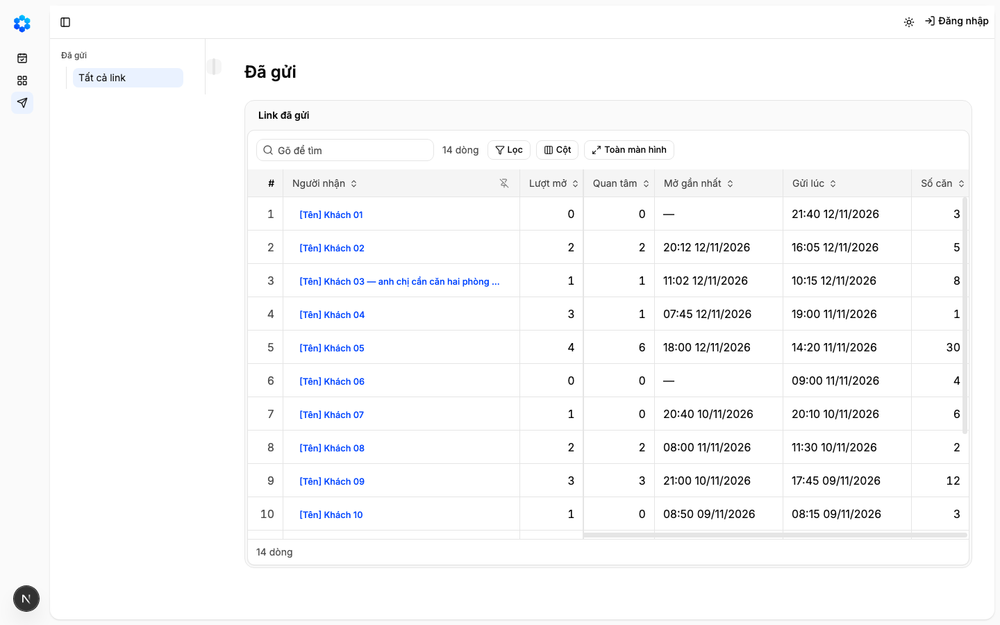
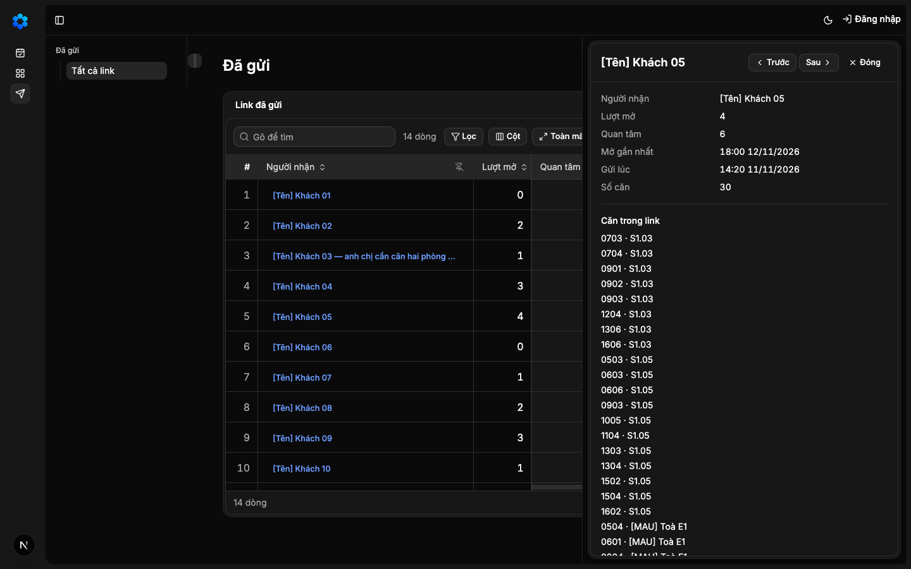
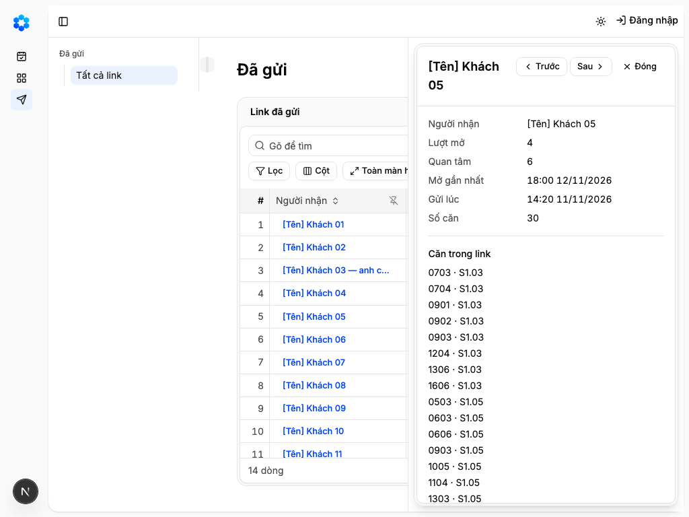
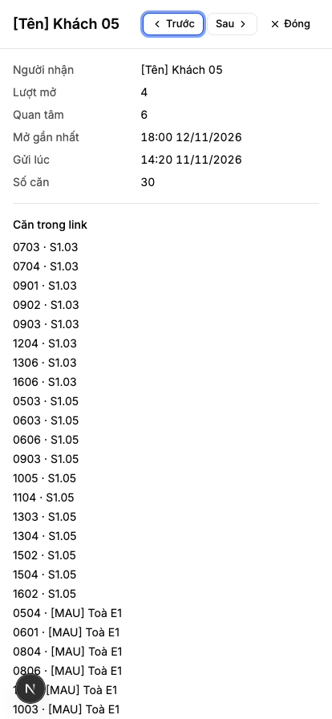
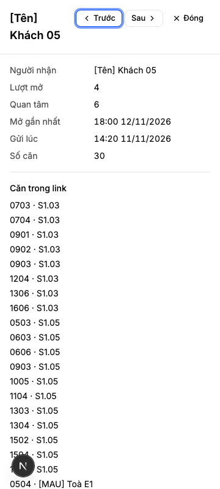
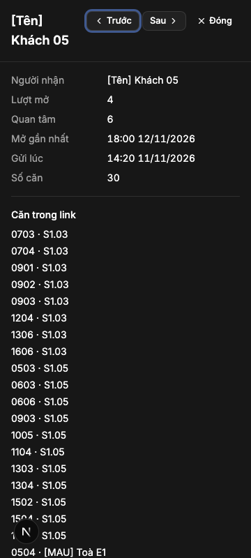
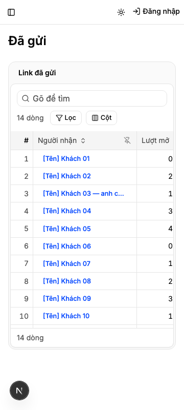
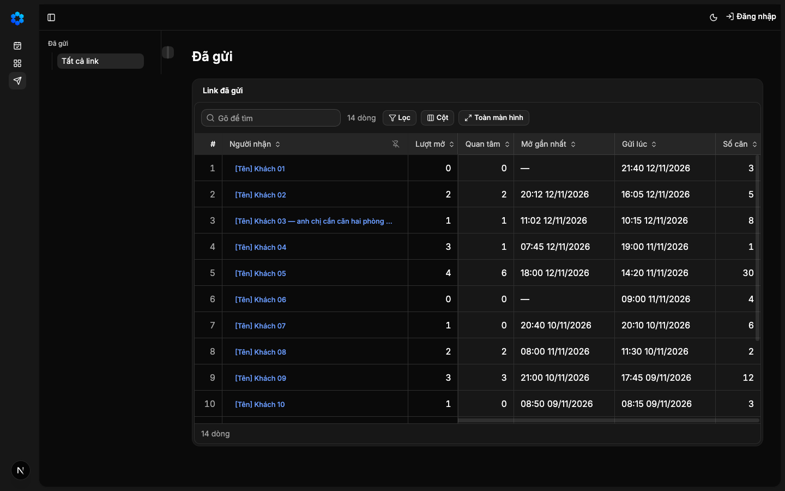
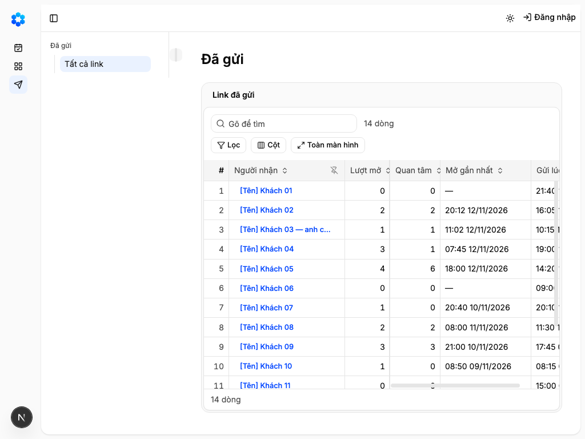
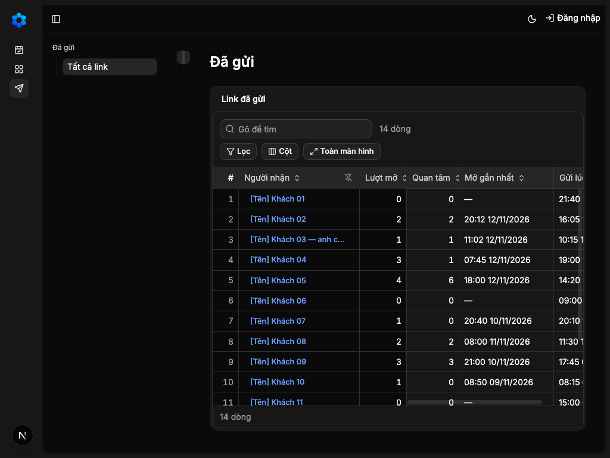
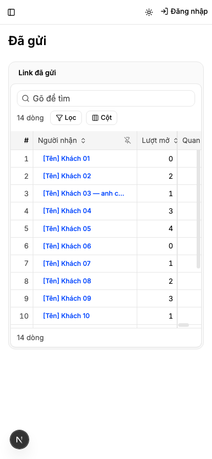
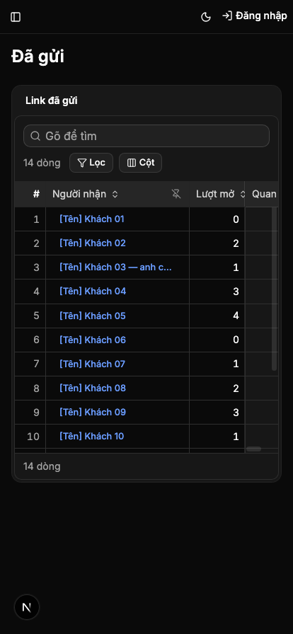

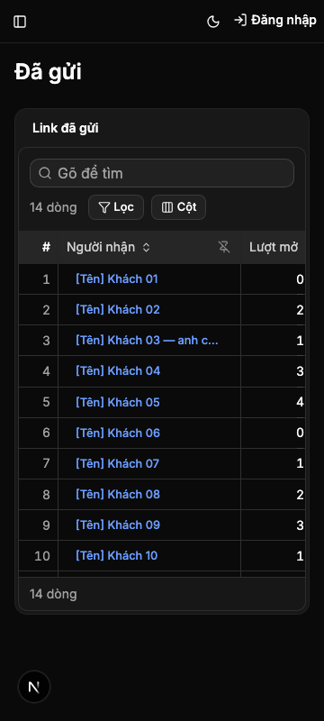
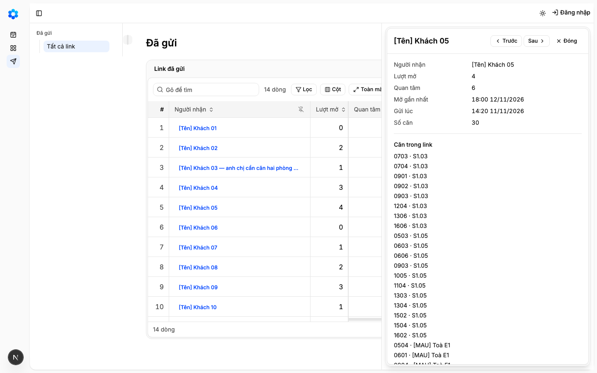
UNCERTAIN (PANEL ĐỀ XUẤT PASS, CHỜ NGƯỜI CHỐT) E15 · judgment
AC-10: Given Đã gửi đang chạy, When nhìn ở bốn khổ với trạng thái có dữ liệu và với ngăn chi tiết mở, sáng và tối, Then
Phán đoán: Panel đề xuất PASS (domain-correctness, operational-feasibility, spec-alignment đều PASS), nhưng máy không tự chốt mục judgment; người quyết ở Cổng 2.
Eval không phân biệt (Analyst)
Vòng verify
- Round 1: làm lại sau vòng đầu — E2 và E13 đo lưới đã dựng, E14 theo quyết định 0024 trên điện thoại (commit 3c8ef3e).
- Round 2: mọi eval máy xanh; E3, E4, E6, E7, E8, E9, E12 carry-forward từ round 1; E15 chờ người chốt ở Cổng 2.
Tài nguyên
| Khối | Tác tử | Token đầu ra |
|---|
0 lượt chấm · tổng 0 token
Giới hạn và ngoài hợp đồng
- Không gửi link, không nút «Gửi căn», không chọn căn để gửi (hàng 16); không bảng chia sẻ của thiết bị.
- Không lượt mở thật, không lưu khách, không nối người nhận sang Liên hệ (hàng 18); không tắt link, không hạn link, không trang khách hay luật che (hàng 17, K2, K8).
- Không thao tác nào trên dòng hay ở đầu màn, không thêm dòng vào bảng quyền (`ontology/actions.yaml`).
- Không thẻ trên điện thoại (Hỏi-3): lưới cuộn ngang trong vùng như Bảng hàng.
- Không nhóm dòng, không cột người gửi, không trạng thái link.
- Không đọc cơ sở dữ liệu, không bảng mới, không bắt đăng nhập.
- Không chuyển luật đọc `?state=` lên lưới dùng chung (sổ quyết định, revisit khi 2c gộp).
Giao
chưa ghi quan sát production
Giá trị
- Câu hỏi phép đo trả lời: … — chưa đo
- Kết quả nào là SỐNG: … — chưa đo
- Kết quả nào là CHẾT: … — chưa đo
- Timebox: … — chưa đo